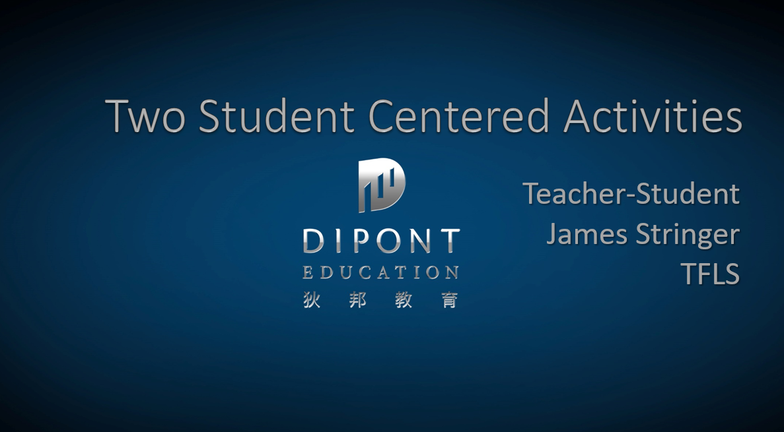

Dipont Education: English Language Subject Panel and Conference Speaker
Dipont Education encompasses numerous international schools and programs across China, and I had the privilege of being a part of their English Language Subject Panel. This role involved collaborating with educators from multiple schools to develop and refine the English curriculum, ensuring it met the student's needs. In addition to my work on the panel, I was also a speaker at the Dipont Education Conference in 2018 and 2019. My presentations focused on innovative teaching strategies and the technology integration in the classroom.
This experience not only enhanced my understanding of curriculum development but also allowed me to contribute to the professional growth of educators across the Dipont network. It was rewarding to share my expertise and learn from others in the field, ultimately this work benefitted the students we serve.